핵심 요약
ORB-SLAM2 위에 동적 객체 검출, static-map 유지, RGB-D background inpainting을 얹어 동적 장면에서도 tracking과 map reuse를 함께 다루는 visual SLAM 시스템이다.
DynaSLAM은 동적 객체를 단순 outlier로 버리는 데서 멈추지 않고, tracking에 쓰면 안 되는 관측과 장기 지도에 복원해 남겨야 하는 static background를 분리한다.
ORB-SLAM2 Extension
monocular, stereo, RGB-D 설정에서 ORB-SLAM2 앞단에 dynamic-content handling 추가.
Semantic Segmentation
Mask R-CNN으로 사람, 차량 등 a priori dynamic classes를 pixel-wise masking.
RGB-D Geometry
multi-view geometry로 semantic class 밖의 실제 움직임을 depth-change 기반으로 보완 검출.
Background Inpainting
이전 keyframe의 RGB-D 정보를 투영해 동적 객체가 가린 static background 복원.
DynaSLAM은 dynamic SLAM을 localization robustification 문제와 long-term static-map usability 문제로 동시에 읽게 만든다. 이 관점이 단순 masking 논문과 가장 크게 다른 지점이다.
semantic mask 중심
a priori dynamic object 영역에서 feature를 뽑지 않아 tracking과 mapping 오염을 줄임.
geometry + semantic 결합
semantic mask가 놓치는 실제 움직임을 depth-change 기반 multi-view geometry로 추가 검출.
장기 재사용성
동적 객체를 제거한 뒤 occluded background를 채워 relocalization과 map reuse에 유리한 지도 생성.
논문 상세 정리
아래부터는 기존 논문 내용을 최대한 담은 상세 해석이다. 핵심 흐름에서 벗어나는 배경지식, notation, 부가 자료는 접어두었다.
Problem: 동적 장면에서 무엇이 깨지는가
DynaSLAM의 출발점은 visual SLAM이 암묵적으로 기대하는 scene rigidity assumption이다. 사람이 움직이거나 차량이 지나가면 동적 feature가 pose estimation에 들어가고, 움직이는 객체가 map의 일부처럼 저장되며, 장기적으로 재사용해야 할 static map도 오염된다.
논문은 동적 장면 문제를 outlier 제거가 아니라 tracking 안정성과 static-map 재사용성의 결합 문제로 본다.
대부분의 visual SLAM은 같은 3D 구조가 계속 관측된다고 기대.
moving object feature가 pose와 map update를 왜곡.
동적 객체가 3D map에 남아 relocalization과 reuse를 방해.
동적 관측은 제외하고, 가려진 static background는 복원.
초록과 도입부의 핵심은 dynamic-content handling을 ORB-SLAM2 앞단에 추가해 정확한 tracking과 reusable static map을 동시에 얻는 것이다.
| 문제 축 | 기존 한계 | DynaSLAM의 관점 |
|---|---|---|
| Tracking | moving features가 camera pose 추정을 흔듦 | dynamic region feature extraction 차단 |
| Mapping | 움직이는 객체가 map point로 저장 | static region만 tracking/mapping에 사용 |
| Map reuse | 객체가 사라진 뒤 map과 실제 배경이 불일치 | RGB-D background inpainting으로 static scene 복원 |
Related Works 배경 정리 보기
관련 연구는 “동적 객체를 무엇으로 감지하나”와 “SLAM map에서 어떻게 처리하나”로 나눠 읽으면 중복이 줄어든다.
RANSAC이나 robust cost로 동적 관측을 spurious data처럼 처리.
map projection, depth edge, scene flow, optical flow로 변화 탐지.
photometric/depth residual을 활용하지만 dynamic content에는 여전히 민감.
사람/차량처럼 움직일 가능성이 높은 class prior 활용.
DynaSLAM은 semantic prior와 RGB-D multi-view geometry를 결합해 ORB-SLAM2가 static scene처럼 동작할 수 있는 입력을 만든다.
| 접근 | 얻는 점 | 남는 한계 |
|---|---|---|
| Semantic mask | 사람/차량 같은 movable class를 빠르게 제거 | class prior 밖의 움직임은 누락 가능 |
| Geometry check | 실제로 움직이는 물체를 depth inconsistency로 검출 | RGB-D와 pose 추정 필요 |
| Background inpainting | static background를 복원해 map reuse 가능 | 이전 keyframe에 보이지 않은 영역은 복원 불가 |
Mechanism: semantic mask와 geometry로 어떻게 푸나
방법론의 핵심은 ORB-SLAM2를 새로 만들지 않고, 그 앞단에서 동적 영역을 찾고 제외한 뒤 RGB-D에서는 가려진 static background를 복원하는 것이다. 따라서 DynaSLAM은 “동적 객체를 지운다”보다 “ORB-SLAM2가 신뢰할 수 있는 static observation만 보게 한다”로 읽는 편이 정확하다.
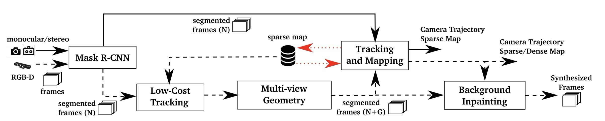
각 module은 검출, 제외, 복원 중 하나를 담당한다.
| 구간 | 무엇을 해결하나 | 핵심 장치 |
|---|---|---|
| Semantic segmentation | a priori dynamic class가 tracking/mapping에 들어가는 문제 완화 | Mask R-CNN pixel-wise mask |
| Low-cost tracking | RGB-D geometry check에 필요한 rough camera pose 확보 | static part 기반 간단한 ORB-SLAM2 tracking |
| Multi-view geometry | semantic class 밖의 움직이는 물체 검출 | projected depth와 observed depth 비교 |
| Tracking / Mapping | dynamic keypoint가 pose/map을 오염시키는 문제 차단 | static segment에서만 ORB feature 추출 |
| Background inpainting | 동적 객체가 가린 static background 복원 | 이전 keyframe RGB-D 투영 |
이 논문에서 중요한 선택은 동적 객체를 하나의 cue로만 판단하지 않는 것이다.
feature outlier rejection만으로 dynamic scene을 처리.
semantic prior와 RGB-D geometry를 전처리로 결합.
tracking 오염을 줄이고 static map을 별도로 보존.
Mask R-CNN은 RGB image에서 person, bicycle, car, bus, dog처럼 potentially dynamic or movable class를 pixel-wise로 segment한다. monocular/stereo에서는 이 semantic mask가 dynamic-content handling의 중심이며, 해당 영역에서는 ORB feature를 뽑지 않는다.
RGB-D에서는 semantic mask만으로 부족하다. 책이나 의자처럼 class prior에는 없지만 실제로 움직이는 물체가 있을 수 있으므로, 이전 keyframe의 keypoint를 현재 frame으로 투영하고 projected depth와 observed depth의 차이를 확인한다.
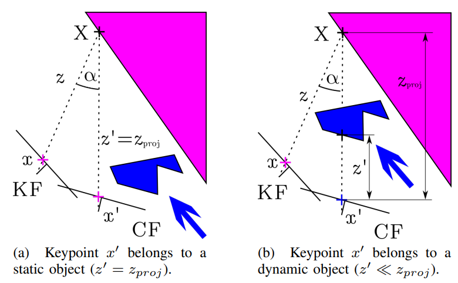
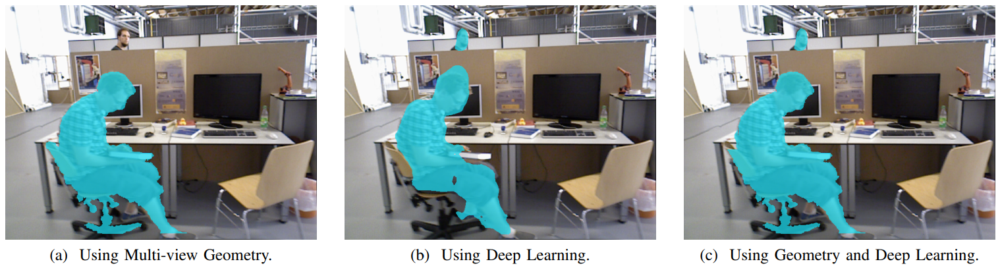
Geometry notation / threshold 세부 보기
논문의 geometry test는 단순 frame-to-frame depth difference가 아니라, pose와 keyframe projection을 이용한 projected-observed depth comparison이다.
| 기호 | 의미 | 판정 |
|---|---|---|
| | previous keyframe의 keypoint | ORB-SLAM2 feature extractor에서 온 point |
| | 현재 frame으로 projection된 위치 | camera motion과 depth를 사용 |
| , | projected depth와 observed RGB-D depth | foreground dynamic object이면 |
| | projected-observed depth gap | 이면 dynamic |
논문은 threshold와 parallax guard를 명시해 geometry test가 naive depth difference로 흐르지 않게 한다.
| 항목 | 설정 | 의미 |
|---|---|---|
| overlap keyframes | overlap이 큰 이전 keyframe 5개 | 정확도와 계산량 절충 |
| parallax guard | 이면 무시 | 큰 시점 차이로 static object가 dynamic처럼 보이는 문제 완화 |
| threshold | | 30개 annotated TUM image에서 최대화 |
| postprocess | border correction과 depth-image region growing | boundary artifact와 sparse keypoint 판정 보완 |
segmentation mask가 준비되면 DynaSLAM은 static segment에서만 ORB feature를 추출한다. RGB-D inpainting은 이전 20개 keyframe의 RGB/depth를 현재 dynamic segment로 투영하는 방식이며, 관측된 적 없거나 valid depth가 없는 영역은 비워 둔다.
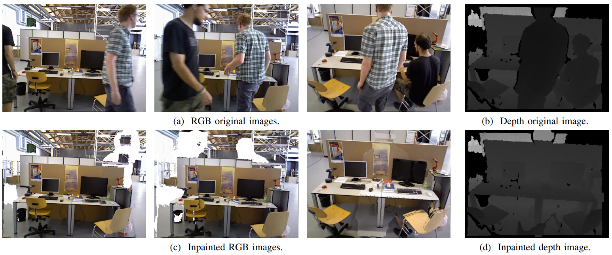
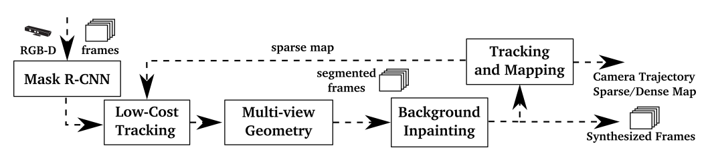
inpainting은 시각적으로 깨끗한 output뿐 아니라, 장기적으로 재사용할 static map을 만들기 위한 장치다.
| 과정 | 입력 | 효과 |
|---|---|---|
| Feature suppression | dynamic segmentation mask | moving-object feature를 tracking에서 제외 |
| Map filtering | static-region keypoints/depth | 동적 객체가 3D map에 남지 않음 |
| Background inpainting | previous keyframe RGB-D projection | occluded static background 복원 |
Evidence: 어떤 sensor와 dataset에서 검증했나
평가는 DynaSLAM이 dynamic scene에서 tracking을 안정화하는지, static map을 남기는지, 그리고 그 대가로 어떤 runtime cost를 치르는지 확인한다. dataset 이름보다 먼저 검증하는 claim을 중심으로 보면 흐름이 선명하다.
핵심 평가는 TUM/KITTI tracking robustness이고, ablation과 timing은 설계 타당성을 보조한다.
| 평가 축 | 근거 | 확인할 것 |
|---|---|---|
| TUM RGB-D dynamic scenes | Table I-III, Fig. 7 | walking sequence에서 동적 객체 처리가 가장 크게 도움N+G는 semantic과 geometry가 서로 보완하고, RGB-D dynamic SLAM 비교에서 강한 성능을 보인다. |
| KITTI monocular/stereo | Table V-VI | moving vehicle이 많은 sequence에서는 도움parked vehicle이 많은 sequence에서는 useful static feature를 제거해 정확도가 낮아질 수 있다. |
| 근거 축 | 근거 | 확인할 것 |
|---|---|---|
| Ablation | Table I, Fig. 6 | N, G, N+G, N+G+BI의 역할 분리BI는 map/output 품질에는 중요하지만, tracking 앞에 넣으면 어려운 pose sequence에서 손해가 날 수 있다. |
| Runtime | Table VII | real-time 최적화는 아님Mask R-CNN, region growing 기반 geometry, inpainting이 주요 병목이다. |
논문 결과는 “항상 더 정확하다”가 아니라, dynamic content가 실제로 tracking/map을 오염시키는 조건에서 DynaSLAM이 강해진다는 쪽에 가깝다.
moving people이 많은 high-dynamic sequence에서 improvement가 가장 분명.
모든 차량이 움직이는 sequence에서는 도움, parked car가 많은 경우에는 손해 가능.
정확도 외에도 structural object만 남는 reusable map이 주요 claim.
online 가능성을 보이지만, real-time optimized system은 아님.
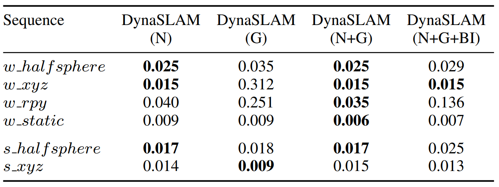
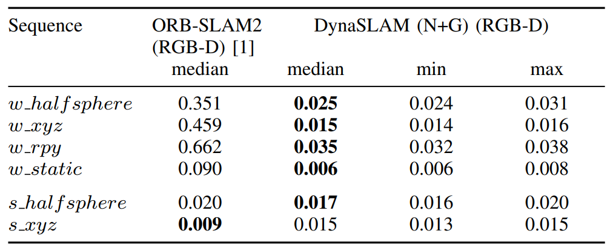
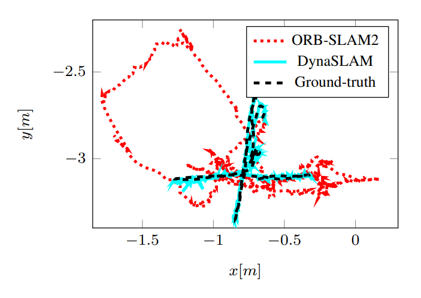
TUM은 dynamic indoor RGB-D robustness를, KITTI는 driving sequence에서 movable-class masking이 언제 도움/손해가 되는지 보여준다.
walking/sitting, half/xyz/rpy/static motion으로 구성된 RGB-D dynamic-scene test.
역할: high-dynamic indoor tracking robustness와 variant ablation.urban/highway stereo sequences with moving and parked vehicles.
역할: a priori dynamic class 제거가 driving SLAM에 주는 양면성 확인.TUM / KITTI 세부 결과 보기
세부 표는 dynamic object가 실제로 움직이는지, 그리고 그 feature를 제거하는 것이 tracking에 유리한지로 읽는다.
| Dataset | 조건 | 해석 |
|---|---|---|
| TUM walking |
| dynamic feature removal과 geometry segmentation이 직접적으로 도움 |
| TUM sitting |
| 유용한 feature까지 줄어드는 경우 ORB-SLAM2가 유리할 수 있음 |
| KITTI 01/04 |
| vehicle feature 제거가 tracking에 도움 |
| KITTI 00/02/06 |
| a priori dynamic class 제거가 항상 accuracy를 높이지는 않음 |
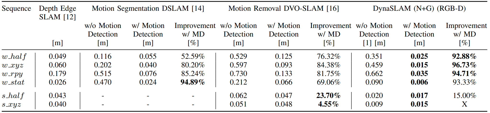
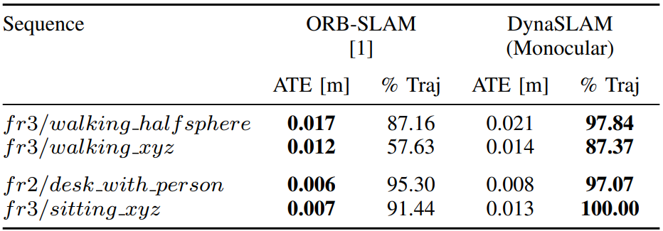
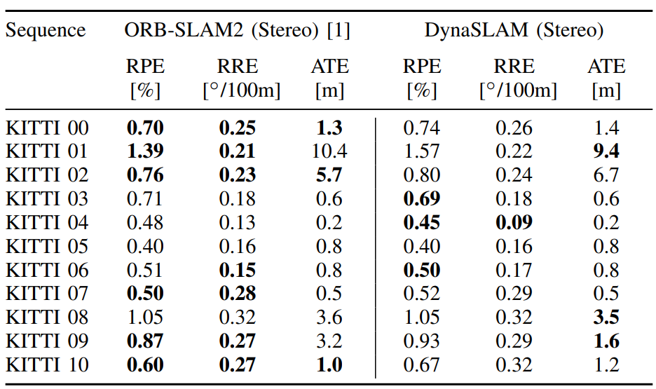
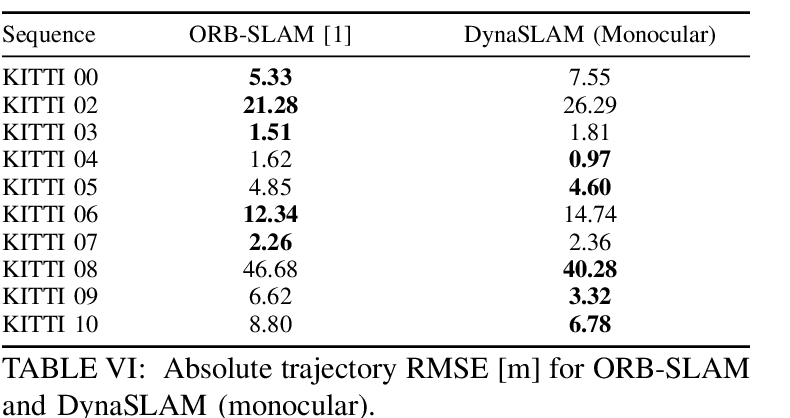
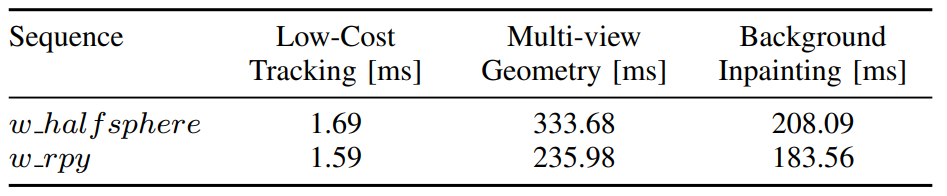
논문은 DynaSLAM이 real-time optimized system은 아니며, lifelong static maps를 만드는 offline mode도 중요한 사용처라고 본다.
| Stage | Cost source | 해석 |
|---|---|---|
| Mask R-CNN | frame-wise semantic segmentation | 모든 sensor mode에 추가되는 공통 비용 |
| Multi-view geometry | region growing 기반 dynamic region expansion | 정확도와 계산량이 직접 trade-off |
| Background inpainting | previous keyframe RGB-D projection | tracking/mapping 뒤에 수행하는 이유 중 하나 |
Usage / Limits: 언제 쓰기 좋은가
DynaSLAM은 동적 객체가 tracking과 map reuse를 동시에 방해하는 환경에 잘 맞는다. 반대로 실시간성이 가장 중요한 상황이나, movable class가 실제로는 static feature로 유용한 장면에서는 trade-off를 조심해야 한다.
결론과 실험을 적용 조건으로 바꾸면 다음처럼 정리된다.
| 구분 | 요약 | 이유 |
|---|---|---|
| Good fit | 사람/차량이 자주 움직이고 static map reuse가 중요한 SLAM | dynamic feature를 tracking/mapping에서 제외하고 static background를 복원 |
| Required assumption | Mask R-CNN class prior, RGB-D geometry 또는 ORB-SLAM2 feature pipeline | semantic/geometry mask가 front-end 신뢰도를 결정 |
| Weak condition | parked vehicle처럼 movable class가 실제로는 static feature인 장면 | 유용한 static feature를 제거해 ATE가 악화될 수 있음 |
| Runtime trade-off | real-time보다 static map quality와 offline/lifelong mapping이 중요한 상황 | Mask R-CNN, geometry, inpainting이 추가 비용을 만듦 |
Conclusion
논문은 DynaSLAM을 ORB-SLAM 기반 visual SLAM에 motion segmentation과 background inpainting을 추가한 시스템으로 정리한다. monocular, stereo, RGB-D 환경에서 동적 객체의 영향을 줄이고, RGB-D에서는 동적 객체가 제거된 RGB/depth synthetic frame까지 생성한다.
결론의 핵심은 정확도 하나만이 아니다. TUM Dynamic Objects에서는 RGB-D dynamic SLAM으로 강한 성능을 보이며, KITTI에서는 moving vehicle이 많은 sequence에서는 도움이 되지만 parked vehicle이 많은 경우 정확도가 약간 낮아질 수 있다. 그럼에도 static structural objects만 남는 map은 long-term application에 더 적합하다는 점을 강조한다.
느낀점
(작성중...)
향후 계획
(작성중...)
Problem: what breaks in dynamic scenes?
DynaSLAM starts from the scene rigidity assumption behind most visual SLAM systems. When people move or vehicles pass through the scene, dynamic features corrupt pose estimation, moving objects become part of the map, and the resulting map becomes harder to reuse over time.
The paper reframes dynamic scenes as a joint problem of tracking stability and static-map reusability.
Most visual SLAM systems expect persistent 3D structure.
Moving-object features distort pose and map updates.
Dynamic objects remain in the map and harm relocalization.
Exclude dynamic observations and reconstruct static background.
The core claim is to add dynamic-content handling before ORB-SLAM2 so the system can obtain both accurate tracking and a reusable static map.
| Axis | Failure mode | DynaSLAM view |
|---|---|---|
| Tracking | Moving features disturb camera-pose estimation. | Suppress feature extraction in dynamic regions. |
| Mapping | Moving objects are stored as map content. | Use only static regions for tracking and mapping. |
| Map reuse | The map disagrees with the background after objects move away. | Recover static scene with RGB-D background inpainting. |
Related Works background
The related work is easier to read by separating how dynamic content is detected and how it affects the SLAM map.
Handles dynamic observations as spurious data through RANSAC or robust costs.
Detects changes using map projection, depth edges, scene flow, or optical flow.
Uses photometric or depth residuals but still depends on scene consistency.
Uses class priors for potentially moving objects such as people and vehicles.
DynaSLAM combines semantic priors with RGB-D multi-view geometry to make ORB-SLAM2 operate on observations that behave like a static scene.
| Approach | What it gives | Remaining limitation |
|---|---|---|
| Semantic mask | Quickly removes movable classes such as people and vehicles. | Motion outside the class prior can be missed. |
| Geometry check | Detects actually moving objects through depth inconsistency. | Requires RGB-D and an estimated pose. |
| Background inpainting | Recovers static background for map reuse. | Cannot fill regions never observed in previous keyframes. |
Mechanism: how semantic masks and geometry solve it
The method does not replace ORB-SLAM2. It changes what ORB-SLAM2 sees by detecting dynamic regions before tracking and mapping, and in RGB-D mode it also reconstructs the background occluded by those regions.
Each module handles detection, exclusion, or reconstruction.
| Stage | Problem handled | Core device |
|---|---|---|
| Semantic segmentation | Potentially dynamic classes should not support tracking/mapping. | Mask R-CNN pixel-wise mask |
| Low-cost tracking | RGB-D geometry needs rough camera pose. | Lightweight static-region tracking |
| Multi-view geometry | Motion outside semantic priors should still be detected. | Projected vs observed depth |
| Tracking / Mapping | Dynamic keypoints should not corrupt pose/map updates. | ORB features only in static segments |
| Background inpainting | Occluded static background should remain usable. | RGB-D projection from previous keyframes |
The important design choice is not to rely on a single dynamic cue.
Handle dynamic scenes only with feature outlier rejection.
Combine semantic priors and RGB-D multi-view geometry.
Reduce tracking contamination and preserve a static map.
Mask R-CNN segments potentially dynamic or movable classes such as people and vehicles. In monocular and stereo mode this semantic mask is the main dynamic-content filter.
RGB-D mode adds a geometric check for objects that are not a priori dynamic but actually move, such as a book or chair being carried.
Geometry notation / threshold details
The geometry test uses pose-aware projection, not a naive image-space depth difference.
| Symbol | Meaning | Decision |
|---|---|---|
| | Keypoint in a previous keyframe. | Comes from ORB-SLAM2 feature extraction. |
| | Projected location in the current frame. | Uses camera motion and depth. |
| , | Projected depth and observed RGB-D depth. | A foreground dynamic object gives . |
| | Projected-observed depth gap. | Dynamic when . |
The thresholds and guards keep the geometry test from becoming a naive frame-to-frame depth difference.
| Item | Setting | Meaning |
|---|---|---|
| overlap keyframes | 5 previous keyframes with high overlap | Accuracy and computation trade-off |
| parallax guard | Ignore when | Reduces false dynamic decisions from large viewpoint changes |
| threshold | | Chosen from 30 annotated TUM images by maximizing |
| postprocess | Border correction and depth-image region growing | Complements boundary artifacts and sparse keypoint decisions |
Once the mask is ready, DynaSLAM extracts ORB features only from static segments. RGB-D inpainting projects RGB/depth information from previous keyframes into the dynamic regions of the current frame.
Inpainting is not only for cleaner output frames; it supports a reusable static map for long-term SLAM.
| Step | Input | Effect |
|---|---|---|
| Feature suppression | Dynamic segmentation mask | Excludes moving-object features from tracking. |
| Map filtering | Static-region keypoints/depth | Prevents dynamic objects from remaining in the 3D map. |
| Background inpainting | Previous-keyframe RGB-D projection | Recovers occluded static background. |
Evidence: which sensors and datasets test the claims?
The evaluation checks tracking robustness in dynamic scenes, static-map quality, and the runtime cost of adding semantic segmentation, geometry, and inpainting.
Core evaluation is tracking robustness on TUM/KITTI; ablation and timing support the design argument.
| Evaluation axis | Evidence | What to check |
|---|---|---|
| TUM RGB-D dynamic scenes | Table I-III, Fig. 7 | Dynamic handling helps most in walking sequencesN+G combines semantic and geometric cues and gives strong RGB-D dynamic-scene results. |
| KITTI monocular/stereo | Table V-VI | Helps when vehicles are movingCan hurt when parked cars provide useful static features. |
| Evidence axis | Evidence | What to check |
|---|---|---|
| Ablation | Table I, Fig. 6 | N, G, N+G, and N+G+BI separate module effectsBI supports map/output quality but can hurt tracking when applied before localization. |
| Runtime | Table VII | Not optimized for real-time operationMask R-CNN, region growing, and inpainting are the main costs. |
The result is not simply “always more accurate”; DynaSLAM is strongest when dynamic content truly corrupts tracking or map reuse.
High-dynamic walking sequences show the clearest gains.
Moving vehicles help the method; parked vehicles reveal the cost of class-prior masking.
The reusable structural map is part of the claim, not just a byproduct.
The added modules bring clear computational overhead.
TUM tests dynamic indoor RGB-D robustness, while KITTI shows when movable-class masking helps or hurts in driving scenes.
RGB-D dynamic scenes with walking/sitting people and multiple camera motions.
Role: high-dynamic tracking robustness and variant ablation.Urban/highway sequences with both moving and parked vehicles.
Role: effect of a priori dynamic-class removal in driving SLAM.TUM / KITTI detailed results
The detailed tables are easier to read by asking whether an object is actually moving and whether removing its features helps tracking.
| Dataset | Condition | Interpretation |
|---|---|---|
| TUM walking |
| Dynamic-feature removal and geometry segmentation directly help. |
| TUM sitting |
| ORB-SLAM2 can be competitive when useful features are also reduced. |
| KITTI 01/04 |
| Removing vehicle features helps tracking. |
| KITTI 00/02/06 |
| A priori dynamic-class removal does not always improve accuracy. |
The paper does not claim DynaSLAM is fully real-time optimized; offline mode for lifelong static maps is also an intended use case.
| Stage | Cost source | Interpretation |
|---|---|---|
| Mask R-CNN | Frame-wise semantic segmentation | Common cost added to all sensor modes. |
| Multi-view geometry | Region-growing-based dynamic region expansion | Direct trade-off between accuracy and computation. |
| Background inpainting | Previous-keyframe RGB-D projection | One reason it is more natural after tracking/mapping. |
Usage / Limits: when is it useful?
DynaSLAM is most useful when dynamic objects harm both camera tracking and long-term map reuse. It is weaker when runtime is critical or when a movable class is actually a useful static feature.
The paper’s conclusion and experiments can be summarized as application conditions.
| Category | Summary | Reason |
|---|---|---|
| Good fit | SLAM with people/vehicles and long-term static-map reuse. | Dynamic features are excluded and static background is reconstructed. |
| Required assumption | Mask R-CNN class prior, RGB-D geometry, or ORB-SLAM2 feature pipeline. | The frontend mask determines tracking reliability. |
| Weak condition | Parked vehicles or movable objects that are static in the current scene. | Removing useful static features can worsen ATE. |
| Runtime trade-off | Offline or lifelong mapping is more natural than strict real-time operation. | Mask R-CNN, geometry, and inpainting add cost. |
Conclusion
The paper presents DynaSLAM as an ORB-SLAM-based visual SLAM system with motion segmentation and background inpainting. It improves robustness in dynamic environments for monocular, stereo, and RGB-D cameras, and in RGB-D mode it can synthesize RGB/depth frames without dynamic content.
The conclusion is nuanced: DynaSLAM performs strongly on TUM Dynamic Objects and helps KITTI sequences where dynamic objects dominate, but it can be slightly less accurate than ORB-SLAM when parked vehicles provide useful static features. The reusable structural map remains the long-term value proposition.
Takeaway
(Writing...)
Future Work
(Writing...)
Comments